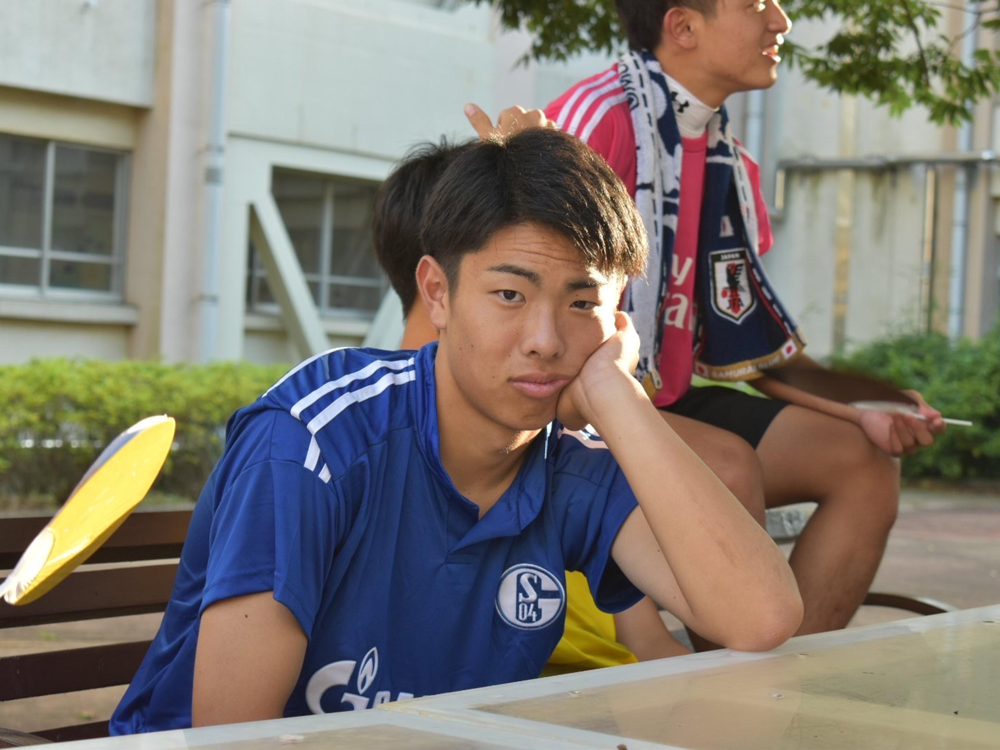
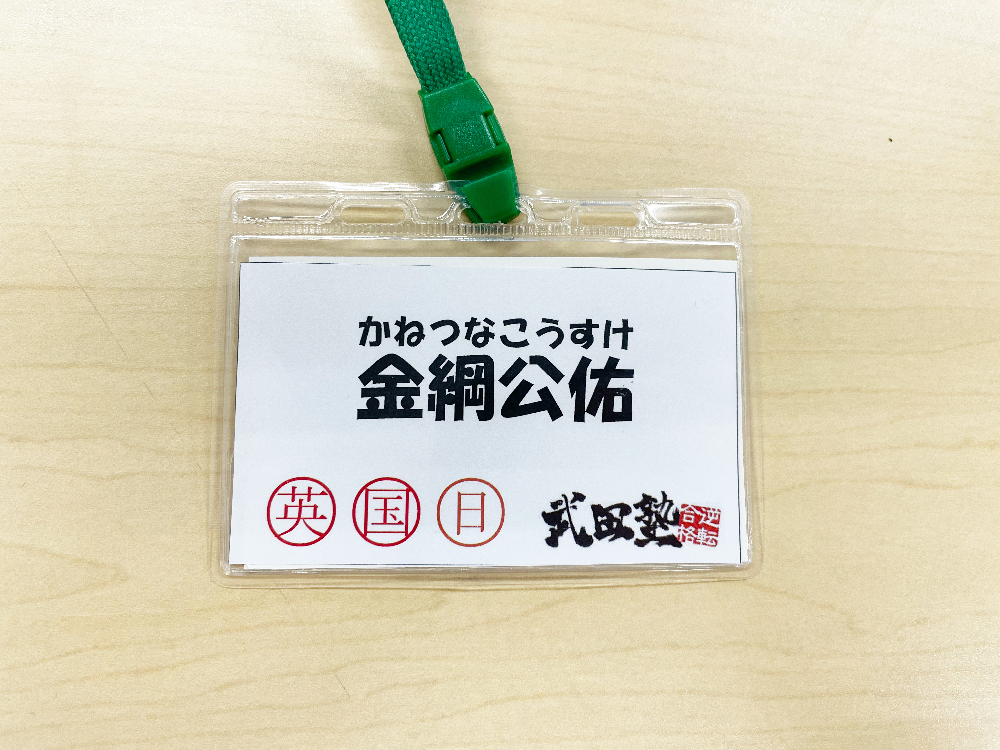

PROFILE
past students
上家咲樂、江野澤陽成太、渡辺春菜、太田唯衣、
平野裕大、
片山小春、須藤蒼乃、町田知穂、
内藤愛麻、鈴木一正、
須藤汐音、島ノ江祥太、岡田もえな
subject
英語、国語
history
木更津高校→千葉大学国際教養学部 1人暮らしの物件探しでは近くにコンビニがあるかどうかよりも、 ジムがあるかどうかを重視しているらしい。おそらくではあるが、植田くんを片手で持ち上げることも可能。
MESSAGE
中条太一
金綱君、ご卒業おめでとうございます！ 最後の最後までしっかりやり切ってくれましたね。 初の早稲田合格見れて歓喜です！ 金綱君の成果を出すまでやり切り力は必ず社会でも活きます。 自分の武器を活かして頑張ってください。 金綱君なら自分の思い描くキャリアを手に入れられると思います。 応援してます！！！
荘司瑛紀
金綱お疲れ様！！ 金綱はこの4年間で一番成長している人だと思います。 最初の方は大したことなかったですが、金綱は自分に厳しくすることができ、 かつ自分で考えて行動することが日に日に増してできるようになっていたかと思います。 そのおかげか特訓の質も上がり、生徒も結果を出すことができ、 金綱自身も自分の望む進路に進むことができたのではないかと思います。 金綱ならばこれからも頑張り続けることが できるかと思いますので、引き続き頑張ってください。 ちなみにSIerに僕自身興味ないわけではないのでまたいつか声をかけた時は いろいろ仕事のことについて教えてください。 お願いします。
池田翔慧
金綱さん、ご卒業おめでとうございます！ 金綱さんのボソッと面白いことを言うところがめちゃめちゃ好きで、 おれもそのセンス欲しいなと密かに思ってました。 また、コツコツ努力を積み重ねているところ、すごく尊敬しています。 春からも金綱さんらしく、がんばってください！ あと、荘司さんにおごってもらった池田屋食堂最高でしたね！！ またおごってもらいましょう！！ いままでありがとうございました！
加来海天
今まで武田塾での勤務お疲れ様でした！ 金綱とは高校の部活でも一緒だったけど、塾でも会うたび色々話せてかった！！！ ちゃりのことに沢山興味をもってくれてありがとう（笑） 誠実でユーモアの兼ね備えた金綱は社会人でも バリバリ活躍していけそうなのでこれからも頑張って！ またサッカー部とかで集ろう。ありがとう！
植田佳和侑
ご卒業おめでとうございます！金綱さんの特訓をこっそり見させていただいたことがあったのですが、そのとき英単語の覚え方を生徒に伝えたあと、その場ですぐに生徒にそのやり方を実践させていて生徒が伝えられたことをイメージしやすくする工夫がされていたのがすごいなと思いました。これからも頑張ってください！応援しています。
太田唯衣
金綱さん。 ご卒業おめでとうございます！ 受験生のときから長い間本当にお世話になりました！！ 受験生の時は金綱さんの特訓のおかげで すごく成長出来たし、本当に楽しい特訓でした！ 面白くて、お話しやすくて、なんでも出来ちゃう私にとって尊敬できる先輩です！ 日曜事務とか被るの結構嬉しかったです笑。 本当に金綱さんに教えて貰えて良かったし、一緒に働けてよかったです。 お仕事頑張ってください！応援しています！ 今まで本当にありがとうございました！( ˶˙ᵕ˙˶ )
上家咲樂
金綱さん！受験期はお世話になりました。 だいぶ昔のように感じますが、 当時は金綱さんの完璧なスケジュール管理のおかげで 英語の成績がどんどん伸びていって、 嬉しかったのを覚えています！ありがとうございました！ 今では講師として色々苦戦することが多い中で、 淡々と仕事をこなす金綱さんを思い返すと 改めて凄さを実感します。そんなできる男金綱さんを 目指して頑張っていこうと思います！お疲れ様でした！！
須藤汐音
金綱さん、ご卒業おめでとうございます！ 私が悩んだ時や困っているときに たくさん話を聞いて励ましてくれて、 本当にありがとうございました。 最後に会えなかったのは残念だったけど、 おかげで早稲田大学に受かりました！！ 大学でも頑張ります。 短い間だけど本当にありがとうございました！
内藤愛麻
金綱さん！ご卒業おめでとうございます！ 金綱さんが受験期支えてくれたおかげで受験期さえも最高に楽しい思い出になりました！ 今後こんな経験できないと思います！ 今となっては金綱さんとの特訓がほんとにほんとに恋しいです（ ; ; ） 今は金綱さんに教えてもらったことを自分の生徒にも伝授できるように頑張っています！ 卒業しても仲良くしてくださいよ〜！ 応援してます♪
HOMEへ戻る
GALLERY

- 
- 